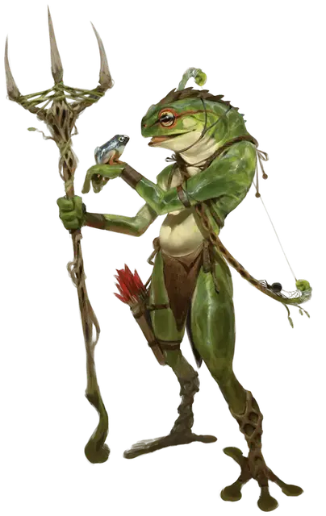

Гриппли воитель
Grippli Warrior
Маленький Гуманоид (Гриппли)

Класс Доспеха 12
Хиты 13 (3к6 + 3)
Скорость 30 футов, плавая 30 футов, лазая 30 футов
| мод | спас | ||
|---|---|---|---|
| СИЛ | 10 | +0 | +0 |
| ЛОВ | 15 | +2 | +2 |
| ТЕЛ | 12 | +1 | +1 |
| мод | спас | ||
|---|---|---|---|
| ИНТ | 10 | +0 | +0 |
| МДР | 14 | +2 | +2 |
| ХАР | 10 | +0 | +0 |
Навыки Атлетика +2, Выживание +4, Скрытность +4
Чувства пассивное Восприятие 12
Опасность 1/4 (50 опыта)
Бонус мастерства +2
Особенности
Языки. Язык Гриппли плюс один другой язык (обычно Общий, Драконий или Первичный).
Задержка дыхания. Гриппли может задержать дыхание на 20 минут.
Прыжок с места. Гриппли может прыгнуть на 30 футов по горизонтали или на 20 футов по вертикали из положения стоя на задних лапах.
Действия
Мультиатака. Гриппли совершает одну атаку языком. Если атака попадает, гриппли может совершить рукопашную атаку трезубцем по той же цели.
Язык. Рукопашная атака оружием: +4 к попаданию, досягаемость 5 фт., одно существо Среднего размера и меньше. Попадание: цель становится схваченной (Сл высвобождения 12). Пока цель схвачена, она считается опутанной, и гриппли не может схватить другое существо.
Трезубец. Рукопашная или дальнобойная атака оружием: +4 к попаданию, досягаемость 5 фт. или дистанция 20/60 фт., одна цель. Попадание: 5 (1к6 + 2) колющего урона, или 6 (1к8 +2) колющего урона при использовании оружия двумя руками в рукопашной атаке, плюс 2 (1к4) колющего урона, если гриппли совершает бросок атаки с преимуществом.
Короткий лук. Дальнобойная атака оружием: +4 к попаданию, дистанция 80/320 фт., одна цель. Попадание: 5 (1к6 + 2) колющего урона, плюс 2 (1к4) колющего урона, если гриппли совершает бросок атаки с преимуществом.
Описание
На первый взгляд или с дистанции гриппли выглядит как большая лягушка. Его голова и тело действительно принадлежат лягушке, но передние конечности - это руки с пальцами, позволяющие обращаться с оружием и другими предметами. На задних лапах такие же пальцы, которые гриппли использует для хватания и лазанья. На четвереньках гриппли передвигается так же быстро, как и на двух ногах.
Коллективные действия. В защите себя и своих поселений гриппли полагаются на засады и партизанскую войну.
Своими длинными языками они могут обездвиживать противника, делая его более легкой мишенью. Деревни гриппли обычно строятся из глиняных кирпичей и других собираемых поблизости природных материалов.
Потомство выращивается всей общиной, а не парой родителей и все яйца общины хранятся в бассейнах с пресной водой до своего созревания. Защита яиц для гриппли - серьезная задача, так как людоящеры, юань-ти и некоторые другие существа ценят их за вкусовые качества.
Близость природе. Большинство гриппли больше заботятся о выживании, чем об абстрактных, таких как добро и зло, идеалах. Религия гриппли основана на анимизме и духах природы; лягушкоподобные не поклоняются ни одному божеству, но время от времени просят помощи у определенного духа природы.